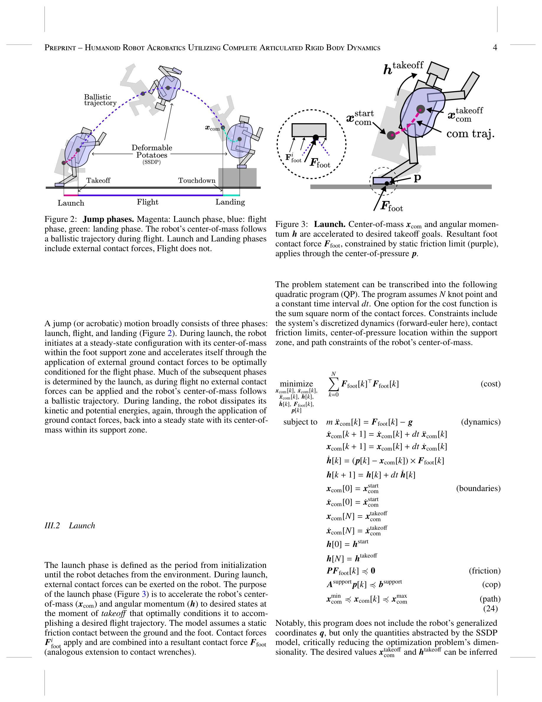
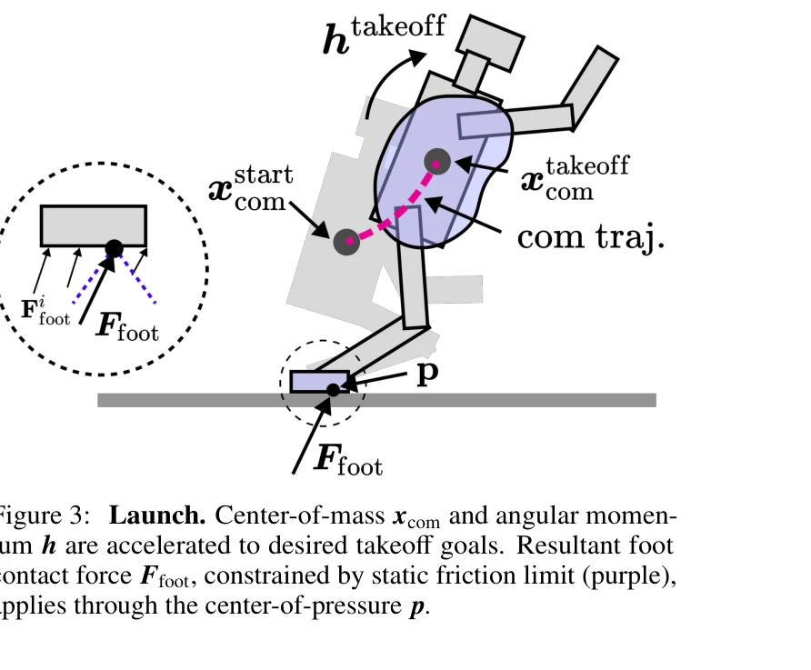
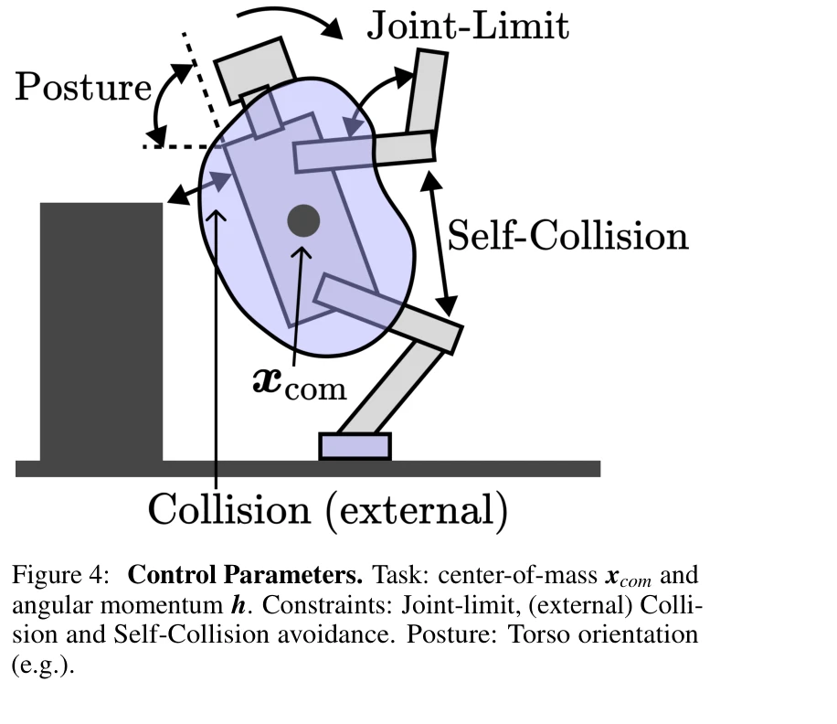

저자: Gerald Brantner | 날짜: 2025-07-17 | URL: https://arxiv.org/abs/2508.08258

Figure 2: Jump phases. Magenta: Launch phase, blue: flight
고도화된 동적 동작을 수행하는 휴머노이드 로봇을 위해 완전한 articulated rigid body dynamics를 기반으로 하는 제어 아키텍처를 제시하며, trajectory optimization과 whole-body control을 model abstraction으로 중개하여 아크로바틱 동작을 실현한다.

Figure 3: Launch. Center-of-mass xcom and angular momen-

Figure 4: Control Parameters. Task: center-of-mass xcom and
총평: 휴머노이드 로봇의 고도 동적 제어에 대한 개념적·이론적 기여도가 높고 control architecture가 체계적이나, 시뮬레이션 검증에 한정되고 optimization 방법론 세부사항이 부족하여 실질적 영향력에는 제약이 있다.